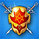

| Последние изменения в игре |
Уважаемые Герои! Сегодня начинается 284-й турнир на выживание с изменённой механикой:
1. Количество выходящих на арену противников ограничено 6-ю волнами;
2. С турнирной арены демонтирована Башня Молний;
3. Сложность противников теперь более сбалансирована для каждой фракции;
3. Новая волна противников выйдет на поле боя не позже трёх полных ходов после выхода предыдущей волны;
4. При победе над 6-й волной противников, к набранным очкам будет добавлено еще столько же очков, умноженных на остаток армии игрока в %. Например, если Герой набрал 1000 очков и в конце боя у него выжила половина армии, то финальный результат будет равен: 1000+1000*0.5=1500 очков;
5. За каждый победный бой Герои будут получать +0.5 очков Гильдии Охотников, а также +5 частей редкого отряда Гильдии Лидеров;
6. Отменены вступительные взносы;
7. Количество возможных боев увеличено до 9;
8. Призовой фонд будет зависеть от количества участников на каждом уровне и фракции;
9. Все набравшие очки участники будут награждены золотом за каждую фракцию отдельно.
Помимо золота, очков ГО и частей отрядов ГЛ, лучшие из лучших будут награждены достижениями:

Побольше побед! |
|
|